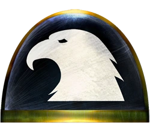

Black Consuls
| Black Consuls | |
|---|---|
| Space Marine Chapter of the Adeptus Astartes | |
 Badge of the Black Consuls: the white eagle's head Artwork © Games Workshop | |
| Founding | Second Founding, early 31st Millennium |
| Successor of | Ultramarines |
| Primarch | Roboute Guilliman |
| Founder | Arrias Cordos |
| Homeworld | Cyclopia, Calixis Sector; formerly a fleet-based Chapter |
| Fortress-monastery | Formerly the ''Noctis Obscurum'' star fort, destroyed |
| Allegiance | Imperium of Mankind |
| Colours | Black and gold |
| Notable events | |
| Cleansing of the Orbstar (early M31); Siege of Goddeth Hive (455.M41); Achilus Crusade (from 777.M41); defence of Kasr Trunch (c. 999.M41); Indomitus Crusade (from c. 999.M41) | |
The Black Consuls are a Loyalist Space Marine Chapter of the Adeptus Astartes. They are a Second Founding Successor or "Primogenitor" Chapter of the Ultramarines. An ancient tome of knowledge, the ''Mythos Angelica Mortis'', lists them among the twenty Chapters founded to make up the ''Astartes Praeses'', a standing task force charged with guarding the regions of the Imperium that surround the Eye of Terror.[1]
The Chapter is known as the least compromising of the Primogenitor Chapters. Its members keep strictly to the tenets of the Codex Astartes. Its history is rich with victories, and its warriors are stern and severe. Imperial scholars note a history of xenophobia and unusually brutal tactics for a Successor of the Ultramarines.[1]
Founding
[edit]The Black Consuls were originally the 72nd Chapter of the Ultramarines Legion. Their first Chapter Master, Arrias Cordos, was a veteran of both the Great Crusade and the dark days of the Horus Heresy. Cordos survived the desperate battles of the Heresy and the Great Scouring and became the first Chapter Master of the Black Consuls when the Second Founding raised them.[1][a]
In the early 31st Millennium, during one of the Chapter's first campaigns, Cordos led his warriors to victory in the Orbstar System against the Word Bearers. The campaign is known as the Cleansing of the Orbstar. It earned him the name "Bane of Lorgar". After his death his Power Axe, ''Lorgar's Bane'', became a treasured relic of the Chapter.[1]
The Black Consuls were originally a fleet-based Chapter. Their star fort, the ''Noctis Obscurum'', was destroyed in the 40th millennium by Drukhari saboteurs. The Chapter then settled on the planet Cyclopia in the Calixis Sector and avenged the loss in a purge that lasted three hundred standard years, crossed fifteen star systems and collapsed an entire sub-dimension of the Webway.[1]
Campaigns and fate
[edit]Imperial records state that the Black Consuls were annihilated at the Siege of Goddeth Hive in 455.M41, when Iron Warriors detonated the hive city's nucleonic stacks and vaporised much of the northern continent. Accounts differ on the attackers. Some name the Word Bearers, and a Word Bearers battleship is said to have been present. The White Consuls suspected that the Chapter had been entirely wiped out. At the same time, Imperial records show a small force of Black Consuls active in the Jericho Reach from the launch of the Achilus Crusade in 777.M41.[1][b]
Scholars note that it is rare for every battle-brother of a Chapter to fight at one time, even when the homeworld is under attack. Squads were often detached for special duties or attached to composite forces. Officers also served as consuls, meeting their counterparts in other Chapters to coordinate larger strategies. Some battle-brothers served in the Deathwatch. Others made pilgrimages to the Shrine of the Primarch on Macragge.[1]
The Black Consuls in the Jericho Reach took council when word of the Chapter's reported destruction finally reached them, and sent a single battle-brother to learn the truth. The rest vowed to fight on in the crusade until he returned. For centuries no word came, and their numbers dwindled by attrition. In the centuries after Goddeth Hive there were also unconfirmed reports of Black Consuls strike cruisers intervening suddenly across the Segmentum Pacificus.[1]
The Chapter sent four full companies to aid in the defence of Kasr Trunch on Cadia during the 13th Black Crusade, before the fall of the world in c. 999.M41.[2]
Resurgence
[edit]When Roboute Guilliman was restored in c. 999.M41 and the Indomitus Crusade began, the Black Consuls were returned to full strength. Primaris Space Marine reinforcements were received on their homeworld of Cyclopia. The Chapter now serves as a guardian of the Imperium in the Segmentum Pacificus.[1]
Before Guilliman's return, the Chapter's battle-brothers made regular visits to the Shrine of the Primarch. Several past Chapter Masters were counted among the most valued counsellors of the Master of Macragge.[1]
Combat doctrine and appearance
[edit]The Black Consuls open campaigns by landing the entire Chapter in a massed Drop Pod assault, with a hundred or more pods descending together.[1] They wear black power armour with a gold Aquila on the chest. A white tactical symbol on the right shoulder pauldron shows a squad's role, and company colours appear on the pauldron trim in the manner of the Codex Astartes. Sergeants wear red helms by ancient tradition. The Chapter badge is the profile of a large white eagle's head, facing left, on a black field. It follows the style of the White Consuls in a different colour scheme.[1]
Timeline
[edit]| Date | Event |
|---|---|
| Second Founding (early M31) | The Chapter is raised as the Black Consuls under Arrias Cordos |
| Early 31st millennium | Cleansing of the Orbstar; Cordos defeats the Word Bearers and becomes the "Bane of Lorgar" |
| 40th millennium | The ''Noctis Obscurum'' is destroyed; the Chapter moves to Cyclopia |
| 455.M41 | Siege of Goddeth Hive; the Chapter is recorded as annihilated |
| 777.M41 | A small force of Black Consuls is recorded in the Jericho Reach with the Achilus Crusade |
| c. 999.M41 | Four companies defend Kasr Trunch on Cadia; Guilliman's return and the Indomitus Crusade restore the Chapter with Primaris reinforcements |